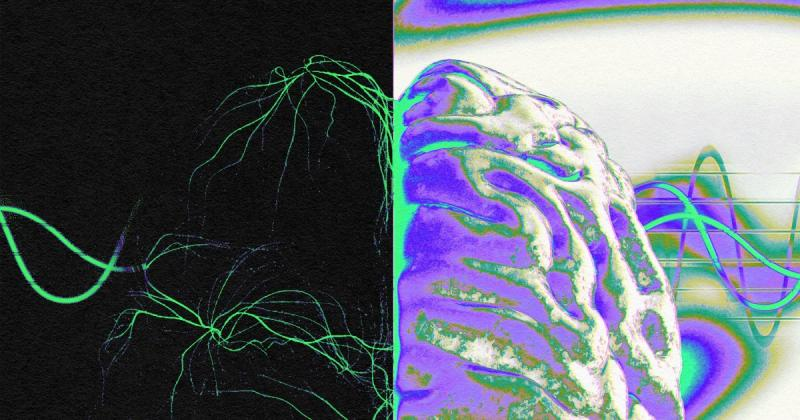

Mind Storms pioneers the
commercialization of cutting-
edge BCI technology, utilizing
advanced Brain Signal
Processing and Generative AI.
Our transformative product
decodes thoughts into spoken
and written language, marking a
breakthrough in accessibility
and affordability..

At Mind Storms, we are reshaping the
landscape of communication
through our innovative BCI solutions.
By harnessing state of the art
Neuroscience and Generative AI, our
products enable users to translate
their thoughts into spoken language,
ensuring a seamless and affordable
way to interface with
computers..Mind Storms introduces a revolutionary
approach to mind-computer interaction,
making BCI technology accessible to all. We
enable technology adoption by covering
both medical and commercial
headsets. Thanks to user-friendly and
affordable advancement in the realm of
assistive technology, Brain Waves to
Spoken Language technology will be
accessible to everyone, especially those
patients diagnosed with LIS, ALS and
Neuro-motor disabilities.